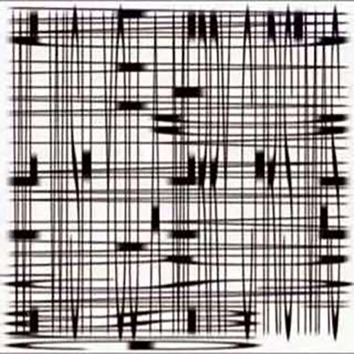
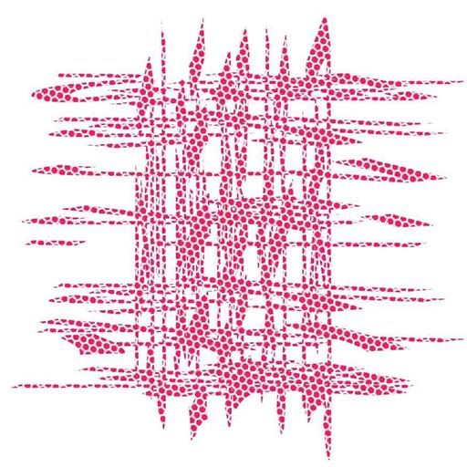
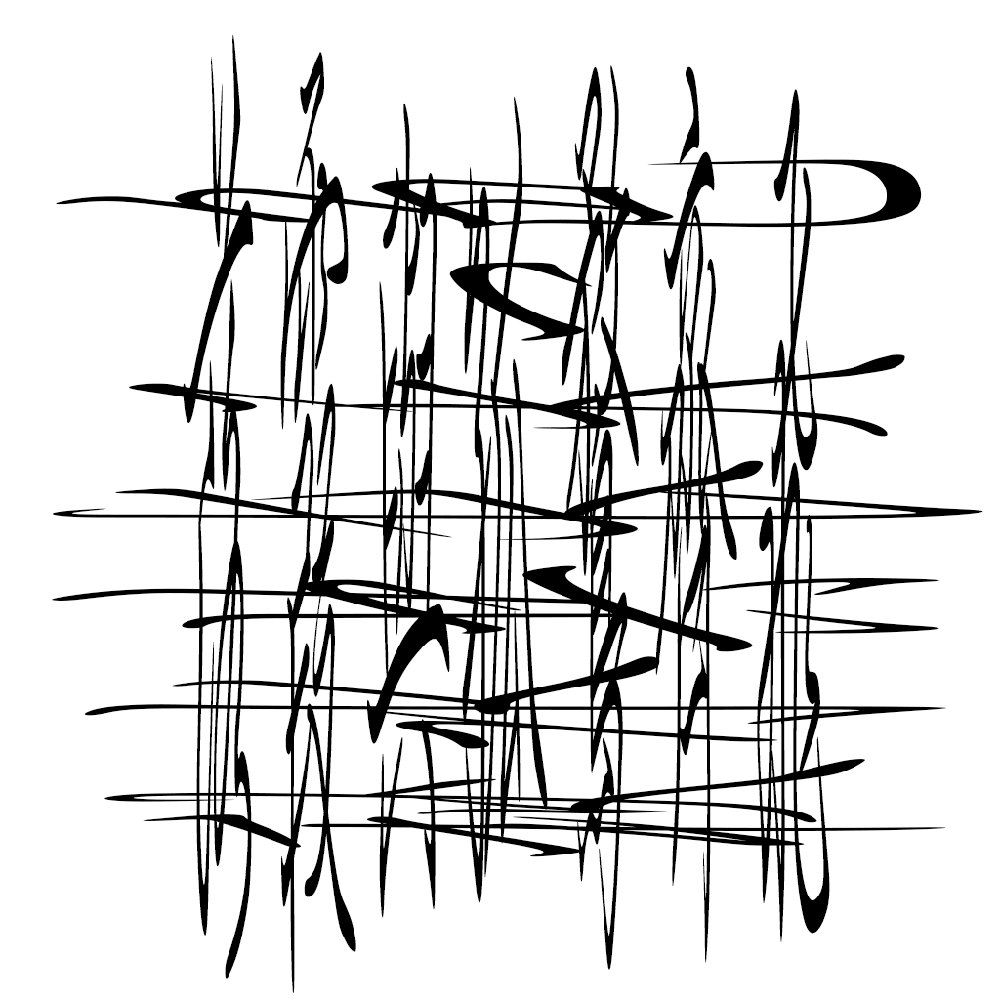
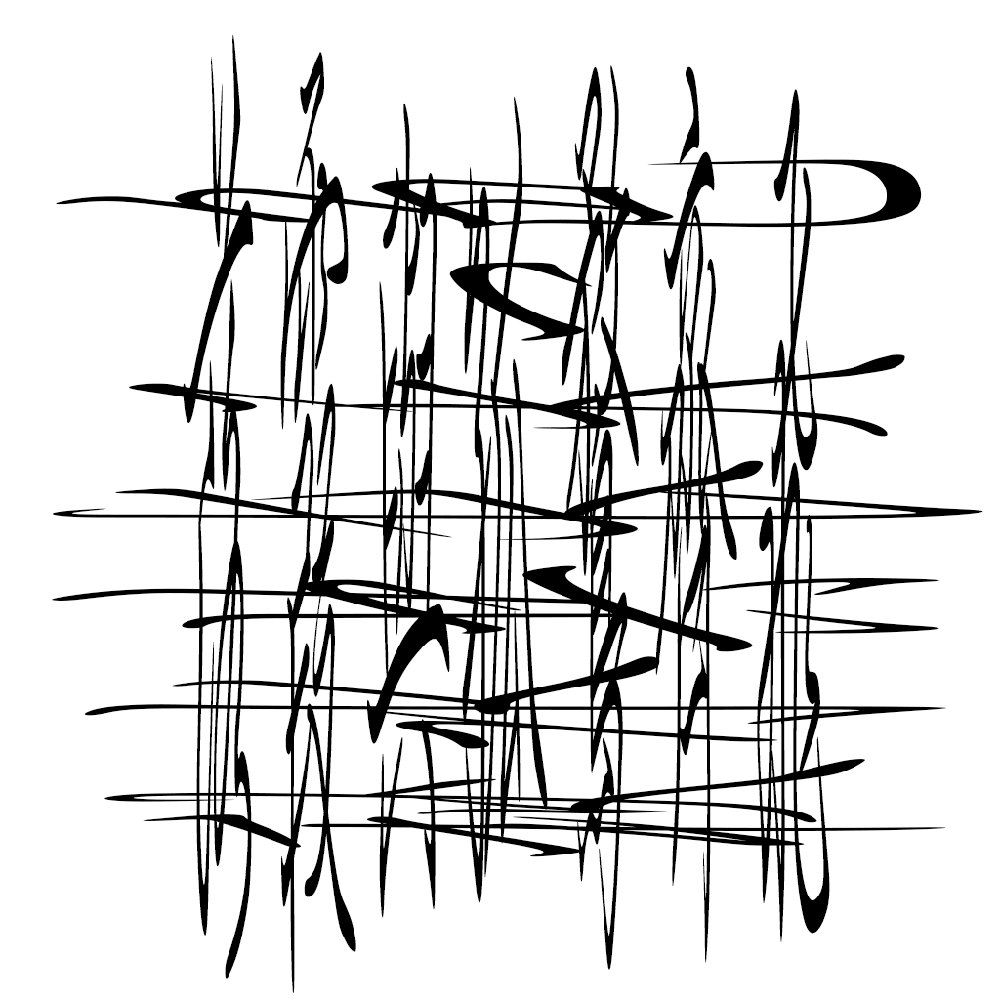
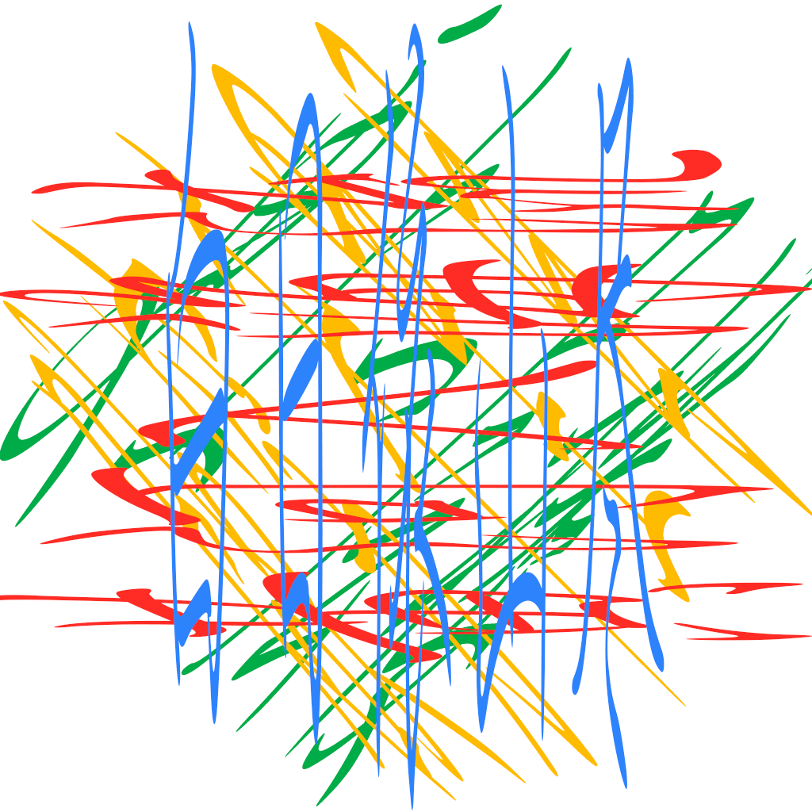

之前在网上见到这样的图片，乍一看是杂乱无章的线条，然而倾斜地观察会发现是一段文字：
其实原理很简单，直接将两段文字，分别横向、纵向拉长，拼在一起就可以：

 
这里我采用了行楷，效果比之宋体和楷体要稍好些。宋体的缺陷在于横竖比重不一，容易被另一个方向一些笔画干扰。
这种信息加密的方式非常巧妙：先在某个方向上进行冗余拉伸，观察时还原；而对于另一个方向，拉伸和观察两个步骤，对于观察者而言是双重的信息耗散，最后自然就不造成干扰了。
注意到每一段文字的原大小大概是纸张的1/4，那么是否可以编码一首四句古诗呢？

虽然勉强能看到，但效果还不够好。或许换种字体或者排版能够更清晰。不过这里我将尝试用上另一个信息维度——颜色：
是更好了些，句子之间分离得更明显了。
如果放上一首《观沧海》呢？